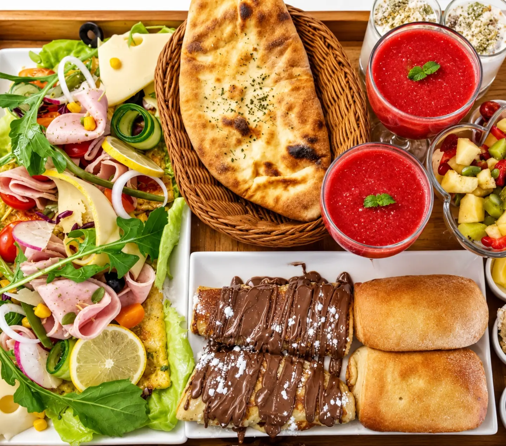

Accueil · La carte
La carte
Crêpes, gaufres, pizzas, pâtes, plats, petit-déjeuner, douceurs et boissons. Recherchez un plat ou choisissez une catégorie.

Accueil · La carte
Crêpes, gaufres, pizzas, pâtes, plats, petit-déjeuner, douceurs et boissons. Recherchez un plat ou choisissez une catégorie.